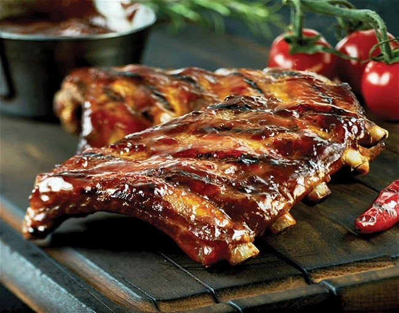

Baby Back Rips

Description
These baby back ribs are sure to impress all those neighbors at the cookout. With its paprika infused rub, and tender, prime-cut beef ribs, spice up your summer with this mouth-watering recipe.
Ingredients
- 1 tbsp of ground cumin
- 1 tbsp of chili powder
- 1 tbsp of paprika
- salt and pepper to taste
- 3 lbs of baby back pork ribs
- 1 cup of BBQ sauce
Directions
- Gather the ingredients.
- Preheat a gas grill for high hear, or arrange charcoal briquettes on one side of the barbeque. Lightly oil the grate.
- Combine cumin, chili powder, paprika, salt, and pepper in a small jar; close the lid and shake to mix.
- Trim the membrane sheath from the back of each rack. Run a small, sharp knife between the membrane and each rib, and snip off the membrane as much as possible.
- Sprinkle as much of the rub onto both sides of ribs as desired. To prevent ribs from becoming too dark and spicy, do not thoroughly rub spices into ribs. Store any unused spice mix in a jar for future use.
- Place aluminum foil on the lower rack to capture drippings and prevent flare-ups. Lay ribs on the top rack of the grill (away from the coals, if you're using briquettes). Reduce gas heat to low and close the lid; cook ribs, undisturbed as possible, until meat pulls away easily from the bone, about 1 hour. An instant-read thermometer inserted into the center should read 145 degrees F (63 degrees C).
- Brush ribs with barbecue sauce, and grill for an additional 5 minutes.
- Serve ribs as a whole rack, or cut between each rib bone and pile individually on a platter.